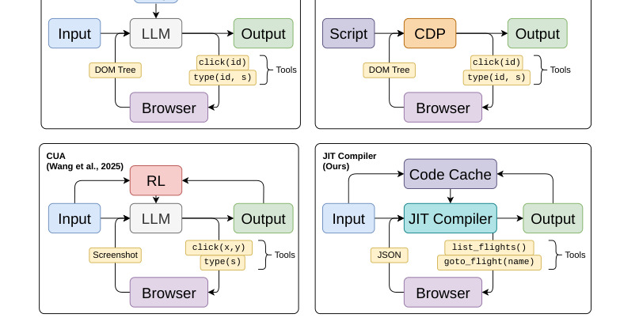
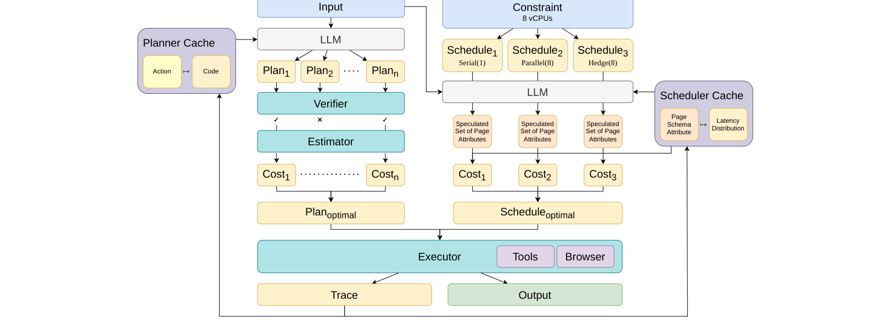
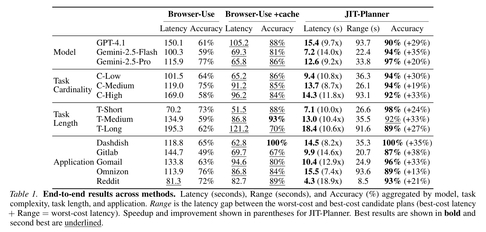
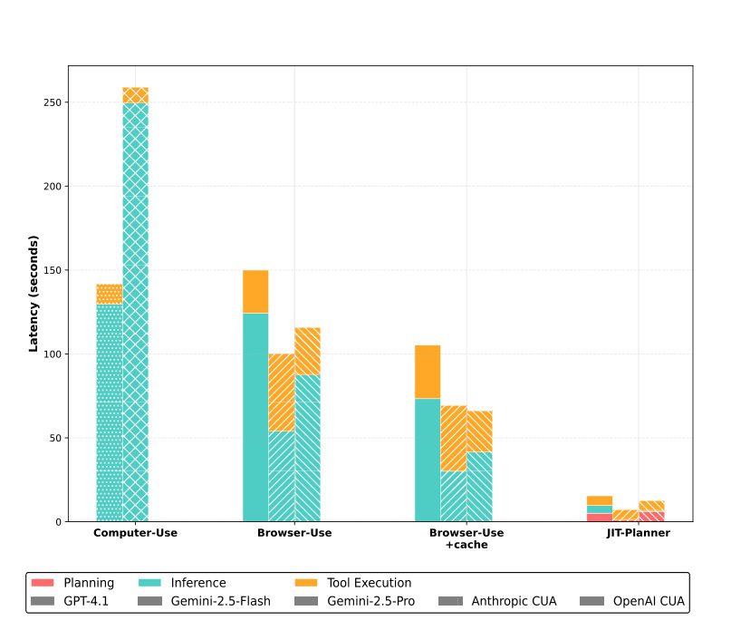

Agent JIT：Agent JIT Compilation for Latency-Optimizing Web Agent Planning and Scheduling
这里精读一篇 2026-05-20 提交到 arXiv 的论文《Agent JIT Compilation for Latency-Optimizing Web Agent Planning and Scheduling》。中文可以叫《面向低延迟网页 Agent 规划与调度的即时编译》。
论文链接：arXiv:2605.21470
作者：Caleb Winston, Ron Yifeng Wang, Azalia Mirhoseini, Christos Kozyrakis
机构/团队：Stanford 相关团队。
公开日期：2026-05-20，来源：arXiv cs.LG / cs.AI，arXiv ID：2605.21470。
代码/项目页：PDF 与 arXiv 页面本轮未核验到独立代码仓库。
0. 导读
Agent JIT 讨论的是 computer-use agent 的一个核心工程瓶颈：传统浏览器 Agent 往往采用“截图、让 LLM 读图/状态、生成一步动作、执行、再截图”的循环。这个循环简单通用，但每一步都需要模型调用，延迟高、成本高，而且工具调用顺序错误会不断累积。论文提出的替代方案是，把自然语言任务即时编译成可执行代码计划，代码中可以包含 LLM 调用、工具调用和并行化逻辑，再通过调度器选择低延迟执行策略。
这篇论文非常贴近 Codex、浏览器自动化和推荐/电商助手的真实需求。一个购物或运营后台 Agent 不应该每点击一个按钮都重新问模型；如果任务可以静态分析出页面元素、工具 precondition/postcondition 和可并行步骤，就应当像编译器一样做计划、检查和调度。Agent JIT 把 Agent 执行从纯交互 loop 推向“计划编译 + 受约束执行 + 成本调度”。
论文摘要给出两个关键结果：JIT-Planner 相比 Browser-Use 达到 10.4 倍速度提升和 28% 准确率提升；JIT-Scheduler 相比 OpenAI CUA 达到 2.4 倍速度提升和 9% 准确率提升。这里的重点不是某个数字本身，而是说明 Agent 的 latency 可以通过编译与调度显著降低，而不只是换更快模型。
1. 背景与问题
Computer-use agents 需要把自然语言目标转成浏览器操作，例如点击、输入、滚动、选择和读取。现有方法通常依赖 frontier model 在每个步骤观察当前截图和 DOM，再决定下一个动作。这种 sequential loop 有三个问题。第一，延迟和模型调用次数线性增长，任务步骤越多越慢。第二，模型容易生成违反工具规范的动作，例如在元素不存在时点击，或在必须先打开菜单前直接提交。第三，很多任务内部存在可并行部分，但逐步 loop 天然串行化。
传统 RPA 脚本速度快但不灵活，LLM CUA 灵活但慢。Agent JIT 试图在二者之间建立中间形态：任务开始时生成代码计划，计划可以调用工具和 LLM，也可以并行执行；同时用 tool protocol 约束状态前置条件和后置条件，减少错误工具使用。这个思路很像数据库查询优化或编译器优化：先生成多个候选计划，再用成本模型和约束检查选择可执行、低成本的计划。
论文要解决的不是“让模型更会点网页”，而是让 Agent 系统更像一个 runtime。LLM 仍然用于理解任务和生成计划，但执行过程中不必每一步都回到 LLM；调度器可以根据历史 latency distribution 选择串行、并行或 hedging。这样一来，Agent 的可控变量从 prompt 扩展到代码结构、工具协议、并发策略和缓存。
对推荐系统或电商场景，这个问题非常实际。购物 Agent、广告投放助手、运营后台助手常需要批量查询多个商品、比较多个供应商、填写多个字段。如果每个元素都串行问模型，体验不可接受。Agent JIT 的启发是：把重复性网页任务编译成可检查的程序，把 LLM 调用集中在真正需要语义判断的位置。
2. 核心方法
Agent JIT 包含三个核心模块。第一是 JIT-Planner。它根据自然语言任务和工具规范生成多个代码计划，对每个计划做 grammar 和 protocol 验证，并估计成本，最后选择最小成本候选。计划不是单步动作列表，而是可执行代码，可以包含条件、循环、工具调用和必要的 LLM 子调用。这样可以把“点击哪些页面元素、何时读取列表、何时调用模型判断”显式写进程序。
第二是 JIT-Scheduler。给定任务中的多个可执行子步骤，调度器探索串行执行、任务并行和请求 hedging 等策略。它使用从历史执行中学习到的 latency distribution，通过 Monte Carlo cost estimation 估算不同策略的延迟分布，再选择更合适的执行方式。并行不总是最优，因为并行会增加资源占用和工具冲突；hedging 也不总是最优，因为冗余请求可能增加成本。调度器的价值在于按任务结构和延迟分布自适应选择。
第三是 invariant-enforcing tool protocol。每个工具不只定义输入参数，还定义 precondition 和 postcondition。例如某个工具必须在页面加载后调用，某个表单提交后应出现确认状态。Planner 生成计划时需要遵守这些状态不变量。这个设计减少了“工具顺序错”这类 Agent 常见失败，也使代码计划更可验证。
论文还设计了 offline cache update 流程，从 execution traces 中抽取页面 schema、把动作映射到 schema element、拟合 latency distribution，并生成可复用 tool code。这个缓存让 JIT 不必每次从零理解页面，长期看类似 PEEK 的 context map 或传统 RPA 的脚本库，但它仍然保留了动态计划生成能力。
3. 图表解读

图 1 把 Agent JIT 放在 RPA 与 CUA 之间。RPA 静态、快但不灵活；传统 CUA 动态、灵活但每步都依赖 LLM；Agent JIT 通过动态编译任务代码，希望同时获得灵活性和低延迟。这个图的关键在于系统定位：作者不是提出一个新浏览器工具，而是提出一个执行范式，把 Agent 从 step-by-step reasoning 转成 program synthesis and scheduling。

图 2 是 Agent JIT 架构。任务进入后，planner 生成并验证代码计划；scheduler 基于延迟分布和任务依赖选择并行策略；runtime 执行工具调用并更新 cache。这个图说明 JIT-Planner 和 JIT-Scheduler 分工明确：前者优化“做什么、怎么写成程序”，后者优化“何时并行、如何降低尾延迟”。对工程实现来说，这种模块化很重要，否则计划生成和调度策略会混成不可调 prompt。

表 1 展示端到端结果，比较 Browser-Use、OpenAI CUA、JIT-Planner 和 JIT-Scheduler 等方法在多个 web application 上的 latency 和 accuracy。论文摘要中 10.4 倍与 2.4 倍速度提升来自这类结果。表格最值得看的不是平均速度，而是不同应用差异：有些应用可并行性高，JIT 收益大；有些任务受页面加载或语义判断限制，收益较小。这提醒我们部署前要按任务类型分桶评估。

图 6 分解了端到端延迟，包括 planning、inference 和 tool execution。传统 CUA 的大头往往在反复模型调用；JIT 把一部分模型调用前置到计划生成，并用代码执行替代中间步骤。这个图证明 JIT 的收益机制：不是单纯让某个模型更快，而是减少执行期模型 round trip，同时通过协议约束降低错误重试。
4. 实验与结果
论文在 5 个 web applications 上评估，包括类似餐饮、电商、邮件、代码平台等任务。指标包括 latency、accuracy、Pass@k、Pass@t、失败类型、不同调度策略的 accuracy-latency trade-off。摘要结果显示，JIT-Planner 相比 Browser-Use 有 10.4 倍速度提升和 28% 准确率提升；JIT-Scheduler 相比 OpenAI CUA 有 2.4 倍速度提升和 9% 准确率提升。
Protocol enforcement 的实验很关键。图 5、图 7、图 8 说明工具协议会把 latency-accuracy frontier 往更优方向移动，减少工具顺序错误，提高较小候选数和较短时间预算下的成功率。也就是说，Agent 可靠性不只靠模型能力，工具 manifest 的结构化约束同样重要。很多 Agent 系统失败不是模型不懂任务，而是执行接口没有把状态约束表达清楚。
Scheduler 实验显示，串行、并行和 hedging 在不同任务上各有优劣。Monte Carlo cost estimation 可以根据延迟分布选择策略，避免一刀切。任务复杂度分析也有实用意义：高 cardinality 任务不一定总是适合并行，因为页面状态、资源竞争和工具依赖会改变成本。
需要注意，论文 benchmark 仍是受控 web applications，真实互联网环境会有验证码、权限、动态布局、异步加载、反自动化机制和不可预测弹窗。Agent JIT 的优势依赖页面 schema 和工具协议能被稳定抽取；如果页面每次变化很大，缓存和代码计划的收益会下降。
5. 我的理解
我认为 Agent JIT 是从“LLM 作为一步一步操作者”转向“LLM 作为程序合成器”的代表。对于重复性强、结构稳定、目标明确的网页任务，逐步 CUA 是低效的。让模型先生成程序，再用协议和成本模型检查，符合软件工程常识。人类也不会每次打开一个后台页面都重新思考每个按钮，而是形成脚本化流程，只在异常处重新判断。
这篇论文也说明 Agent 系统的核心能力不一定是更长链推理，而是更好的 execution substrate。LLM 生成计划只是第一步，真正能上线的是工具定义、状态检查、缓存、调度、失败恢复和日志诊断。推荐系统里也有类似演化：模型分数只是链路一环，候选生成、特征服务、召回缓存、重排预算和实验平台共同决定线上效果。
可能被高估的地方是代码计划的安全性。自然语言任务编译成代码后，错误计划可能批量执行多个错误动作，比一步一步执行更快地造成损害。因此 JIT 必须配合沙箱、dry-run、权限边界和人工确认。对于涉及支付、投放、删除或用户隐私的任务，不能只因为速度提升就放开自动执行。
对推荐和电商 Agent，我最看重的是 schema cache 与 tool protocol。商品比较、库存查询、广告报表导出、活动配置等任务都可以被抽象成工具协议。LLM 负责把用户目标映射到工具程序，调度器负责并行查询多个商品或多个报表。这样比让 LLM 读屏幕逐步点击更可控，也更容易做审计。
6. 工程启发与复现建议
最小复现可以选择一个稳定网页应用，定义 5 到 10 个工具，每个工具写清 precondition、postcondition、参数类型和失败返回。然后让 LLM 一次性生成 Python/JS 计划，并用静态检查器验证工具调用顺序。初期不必实现复杂 Monte Carlo scheduler，先比较“逐步 LLM 点击”和“一次性计划执行”的延迟、成功率和错误类型。
第二步再加入缓存。每次成功执行后，把页面 schema、常用元素、工具延迟和失败原因写入 cache。下次任务生成计划时，把 cache 作为上下文。这里要避免缓存污染：如果页面改版或元素语义变化，旧 schema 应过期。可以为每个工具记录版本、页面 hash 或 DOM 关键字段。
第三步做并行调度。适合并行的是彼此独立的读取和比较任务，例如查询多个商品详情；不适合并行的是强状态依赖任务，例如先选择城市再加载门店。调度器不必一开始就很复杂，先根据依赖图区分 independent nodes，再用简单 latency 统计选择串行或并行。上线前必须增加 dry-run 和人工确认层。
7. 局限与风险
- 页面稳定性决定收益。若目标网站 DOM、权限或交互流程频繁变化，代码计划和缓存很快失效。
- 错误计划可能放大风险。JIT 一次性执行多个动作，必须有权限控制、回滚和确认机制。
- 工具协议编写成本高。precondition/postcondition 若写得不完整，planner 仍会生成看似合法但实际错误的流程。
- benchmark 结果可能高估真实互联网收益。验证码、登录状态、弹窗和反自动化会显著增加失败类型。
- 并行调度可能引入资源竞争。多个浏览器操作或请求并发执行时，页面状态和外部限流会改变延迟分布。
8. 后续跟进
- 跟进是否发布 benchmark、tool protocol schema 和 JIT planner 代码，重点看静态验证如何实现。
- 在本地浏览器自动化任务中尝试一次性代码计划，比较工具调用次数和总延迟。
- 关注 Agent JIT 与 PEEK/context map 的结合：缓存页面 schema 与延迟分布可能显著降低重复任务成本。
- 对高风险操作设计 confirm-before-act 协议，验证 JIT 在安全边界内是否仍能保持速度优势。
9. 精读补充：和推荐/广告工作流的连接
如果把 Agent JIT 放到推荐、广告或电商运营系统里，我会优先选择读多写少、可回滚、结构稳定的任务，例如批量查询商品属性、比较多个投放计划、导出报表、检查活动配置和生成候选清单。这些任务的共同点是页面 schema 比较稳定，错误写入风险较低，且天然存在并行读取空间。相反，涉及预算修改、价格调整、删除素材、提交合约的任务应先保留人工确认。JIT 编译越快，越要把权限边界和确认点设计清楚。
另一个值得跟进的问题是计划复用。论文已经有 offline cache update，但真实系统还需要知道一个计划何时失效。推荐后台常因版本发布改变字段名，广告平台会因活动类型改变表单结构，电商站点会因地区和账号权限改变页面元素。一个实用实现应为每个 plan 记录适用域、页面签名、工具版本和最近成功率。一旦成功率下降或 postcondition 连续失败，就应自动降级回逐步 CUA 或重新编译计划。这样 JIT 才不会从加速器变成隐藏故障源。